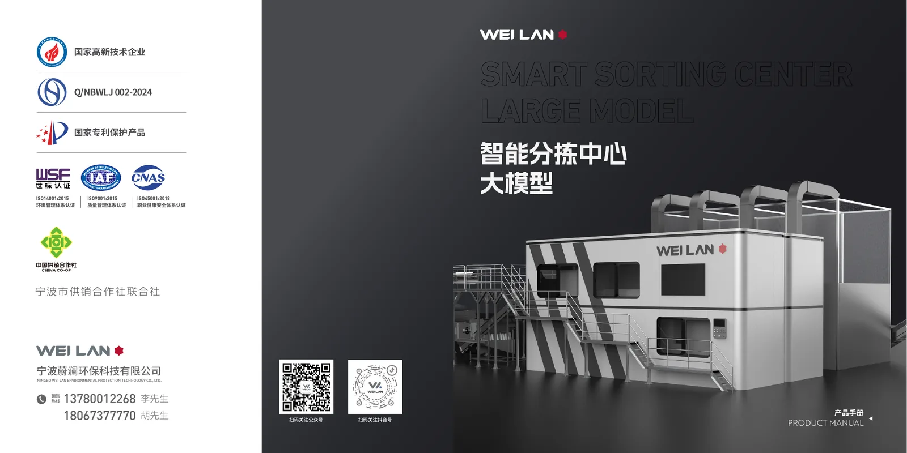
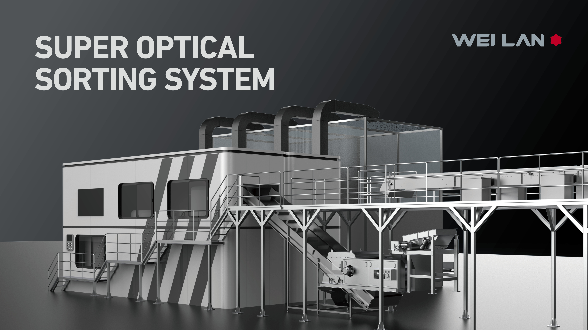
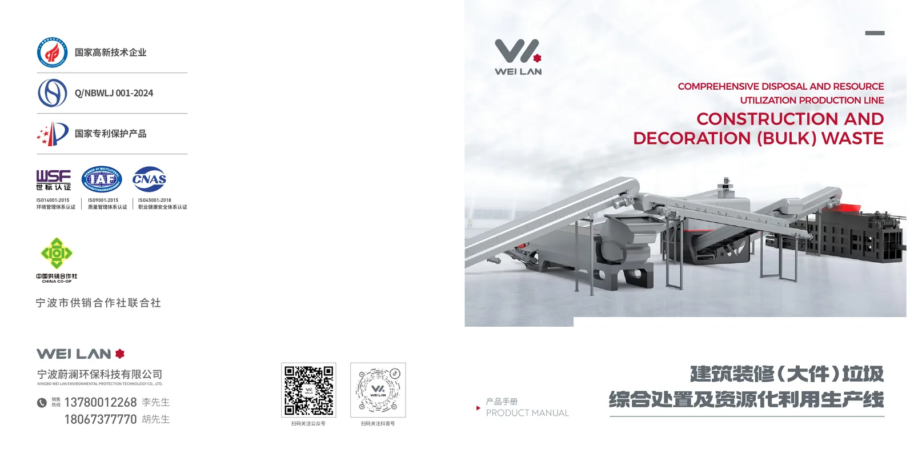

Company overview
WEI LAN is an environmental technology equipment manufacturer focused on intelligent solid waste sorting and resource recovery systems for recyclable plastics, construction waste, decoration waste, demolition waste, and bulky waste.
About WEI LAN
Ningbo Wei Lan Environmental Protection Technology Co., Ltd. develops intelligent sorting equipment, resource recovery systems, IoT control platforms, and digital operation tools for plastic recycling and construction waste utilization projects.

Company Foundation
WEI LAN helps project owners, recycling operators, and municipal partners evaluate equipment direction before quotation, layout planning, and delivery discussion.
WEI LAN is an environmental technology equipment manufacturer focused on intelligent solid waste sorting and resource recovery systems for recyclable plastics, construction waste, decoration waste, demolition waste, and bulky waste.
The company combines sorting equipment, process integration, IoT controls, and digital operation platforms to help recycling projects turn mixed waste streams into measurable recovered output.
Capability System
The About page is structured around the proof overseas buyers usually need: manufacturing, technology development, certifications, and quality control.
Equipment manufacturing, module assembly, process integration, and project delivery support cover AI optical sorting systems and integrated construction waste recycling lines.
R&D work supports machine vision, optical sorting, modular line configuration, control systems, and digital operation tools backed by independent intellectual property.
ISO management certifications and high-tech enterprise recognition give buyers a more concrete basis for supplier qualification and internal approval.
Production checks, equipment assembly review, documentation preparation, and commissioning support help reduce uncertainty before overseas shipment and startup.
Credentials
These proof points support supplier review, internal qualification, and project confidence before a detailed engineering proposal is prepared.
Quality management system for equipment manufacturing, production control, supplier coordination, and project delivery consistency.
Environmental management system aligned with WEI LAN's resource recovery, waste reduction, and recycling equipment business.
Occupational health and safety management support for manufacturing, commissioning, and long-running equipment service work.
Recognition for technology development in intelligent waste sorting, IoT systems, digital operation platforms, and resource recovery equipment.
Patent-protected products and intellectual property support AI optical sorting, modular equipment design, control systems, and resource recovery workflows.
Digital operation platforms can collect throughput, sorting categories, recovery volume, cumulative weight, and carbon indicators to support carbon accounting discussions and carbon asset evaluation for recycling projects.
Evidence Gallery
Existing site images are used as current proof placeholders. Certificate scans, factory photos, equipment assembly photos, and exhibition images can be added here as they are prepared.
Smart sorting center concepts show equipment, process flow, and digital control environment for resource recovery operations.

Integrated crushing, screening, magnetic separation, air separation, baling, and digital management modules support C&D waste projects.

Modular optical sorting configurations for PET, HDPE, PP, and mixed recyclable plastics.

Visit, exhibition, and reference materials can help overseas buyers verify supplier capability before deeper project discussion.
Need Verification Details?
Share your project country, waste type, capacity target, and documentation requirements. WEI LAN can provide suitable credential details, product information, and engineering proposal direction for project evaluation.
Sales hotline: +86 137 8001 2268 / +86 180 6737 7770